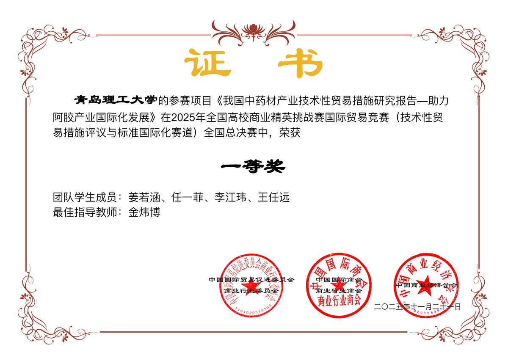
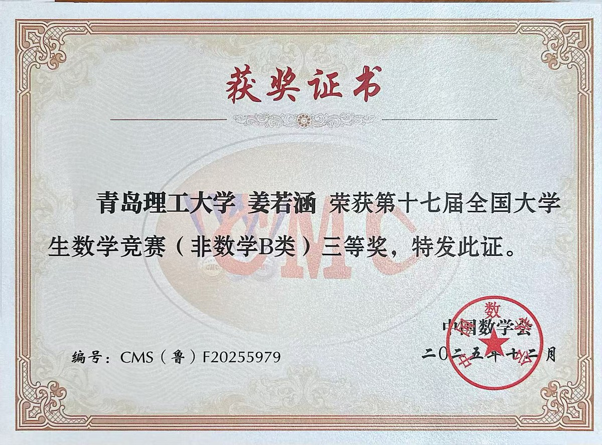
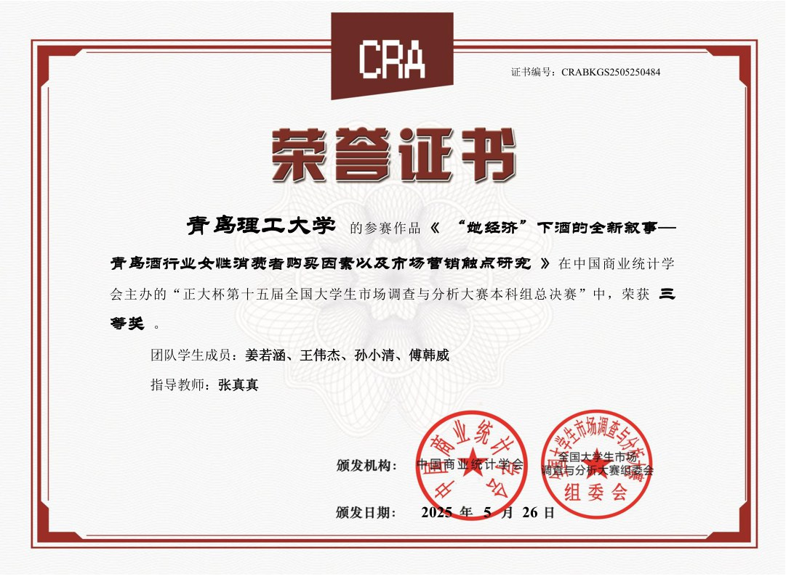
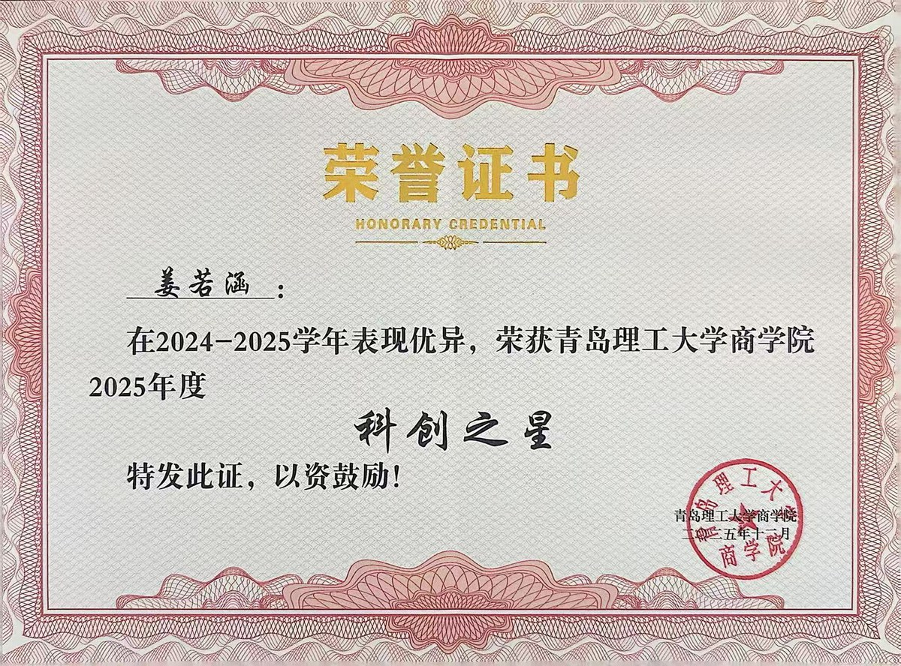

青岛理工大学 商学院
本科阶段经济学相关方向；2024-2025学年学业成绩 91.69、同专业同年级第 1，综合测评 87.32、同专业同年级第 1。
青岛理工大学商学院 | 学术主页
我目前就读于青岛理工大学商学院，我的研究兴趣是数字经济、工业经济与应用计量研究。我的目标是以扎实课程基础、竞赛训练和论文写作为核心，持续积累面向研究生阶段的学术能力和能产出实际落地项目的能力。
Profile
青岛理工大学商学院本科生，课程覆盖宏观经济学、微观经济学、政治经济学、经济思想史、金融市场学、博弈论、概率论与数理统计、数学建模等方向。
目前以数字技术、区域产业升级、绿色可持续发展为主要兴趣方向，希望在研究生阶段继续训练实证研究、数据分析和学术写作能力。
Education
本科阶段经济学相关方向；2024-2025学年学业成绩 91.69、同专业同年级第 1，综合测评 87.32、同专业同年级第 1。
高等数学 B 上 99、线性代数 94、高等数学 B 下 94、概率论与数理统计 97；微观经济学 93、宏观经济学 96、经济法 94、金融市场学 94。
Research
Working Paper / Conference Study
合作者：金炜博、王一鸣、姜若涵、杨雪伟。研究使用我国 30 个省份 2011-2023 年面板数据，构建渔业高质量发展与数字技术评价指标体系。
Awards
以经济管理、数学建模、英语能力和创新创业类竞赛为主线，形成“以赛促学”的持续训练。

国家级一等奖 | 2025

国家级三等奖 | 2025

国家级三等奖 | 2025

2024-2025 学年
Practice
完成两篇原创推文与五篇推文排版，在内容表达、资料整理和协作沟通中持续训练公共写作能力。
寒假期间参与为期 6 天的赛事志愿服务，承担现场协助与跨文化交流相关工作。
参与成长伙伴相关学习帮扶，帮助学科基础薄弱同学复盘课程内容，也在讲解中巩固自身知识结构。